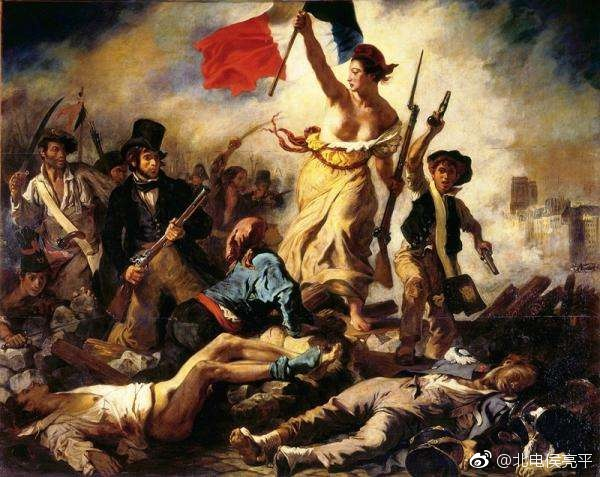

回首页 | #北京电影学院性侵案#微博备份 | 作者微博：@北电侯亮平
#北电性侵事件##北电学生举报教授#
你们也看到了，我的两条微博被封了，也许我的个人信息已被新浪非法透漏出去了。这些天收到全国朋友的关心，有很多朋友建议我赶紧跑路，到国外去躲一躲。我想说，要跑路的不是我，而是那些贪官罪犯们。你把一个女孩性侵了毁了她一生现在还要告她诽谤？你一个大学系主任能贪一个亿？你们身为人师居然如此明目张胆敲诈学生毕业证？我们这些学子寒窗苦读十几年，就是为了伺候这样一帮人？我告你告的理直气壮！
现在，我动了太多利益集团的蛋糕，太多人想把我抓起来，甚至想封我的口。不过没关系，我做不了侯亮平也要做陈海。我一个普通家庭的学生，如果能以我一人的安危得失换取这些亿万贪官的法律制裁，能换到全国对高校教育不正之风的一点点反思，我也是值了。
中国不缺革命者，但缺敢为革命流血者。
